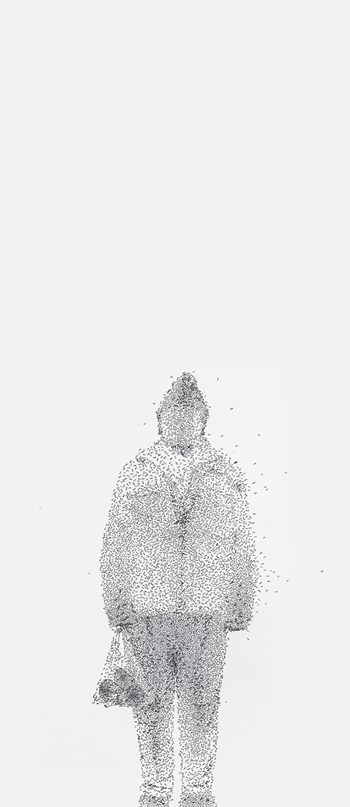

These works did not come from “studio”, but were produced from audience’s participation in the public, for instance, entry of public libraries, opening ceremonies of art exhibitions, etc. The participants voluntarily stood there as “images” of the works, she/he was willing to experience the feeling of her/his image changing to works. They also took part in completing the works.
In order to proceed smoothly, I invited some “volunteers” to participate. They are young people who have received art training before. I provided them with some simple training, eg. how to communicate with audience on site, illustrating how the works were completed, usage of materials, content of the Chinese stickers, etc.
I quite enjoy completing my works in public places. I enjoy communicating with the participants in the completion of my works. Some participants took part in the exhibition from the very beginning to the end and became my friends. Communication is the key to complete the works, including communication with “image people” standing there, and with the audience. I’m also delighted to see the interaction and communication between the audience during the completion of my works.
The materials used in the works are stickers. Each sticker consists of two Chinese characters expressing emotions. I collected all the vocabulary that express emotions in the Chinese language, including over 3000 “positive” and over 3000 “negative” vocabulary.
“Nature has placed mankind under the governance of two sovereign masters, pain and pleasure.
It is for them alone to point out what we ought to do, as well as to determine what we shall do.”
----- Jeremy Bentham